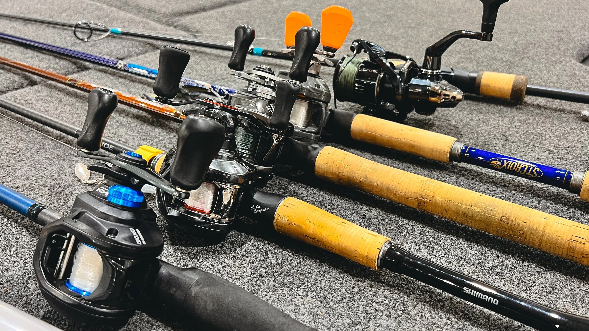
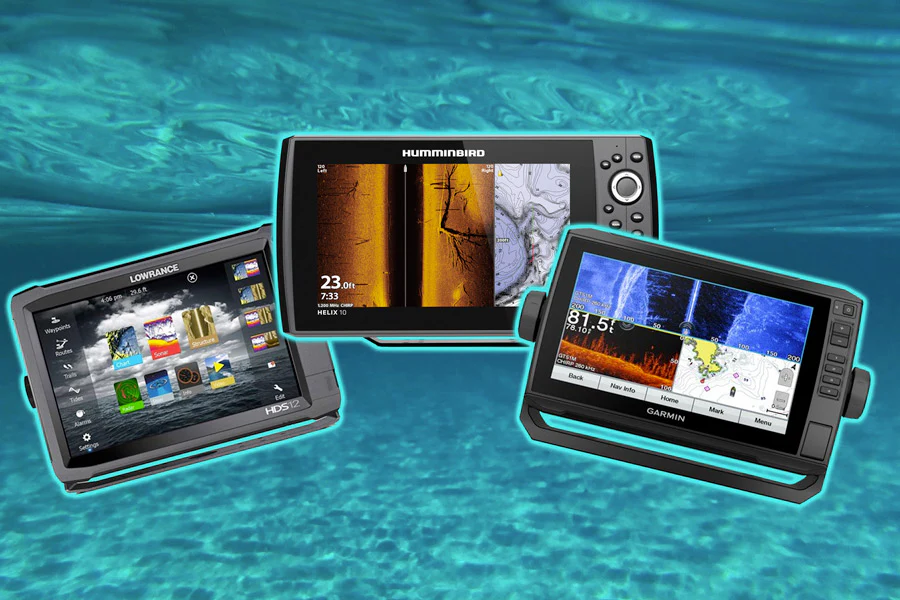

Honest reviews from real fishing sessions on Montreal's waterways. No sponsored opinions.

The best all-around spinning reel for freshwater in the $200–$250 range. Three seasons tested on St. Lawrence pike and walleye.
Sensitive enough for finesse fishing, powerful enough for heavy pike cover. A serious rod at a non-serious price.
No lure has caught more pike per dollar in Montreal-area waters. A genuine classic that still outfishes modern alternatives.
The best entry-level fish finder for kayak anglers. Crystal-clear CHIRP sonar, built-in GPS, under $200. Tested at Lac Saint-Louis.
I tested this UV-protective fishing shirt for 30 days through a Quebec summer. Lightweight, breathable, and genuinely blocks UV-A/B.
The best spinning reel under $100. For beginners or as a backup setup, this reel punches well above its price point.
Not sure what to buy? These guides break it down by budget, species, and experience level.

Tested across five rod categories, spinning, baitcasting, ultralight, and ice rods, with specific picks for pike, walleye, and bass.
Read Guide
What does side imaging actually show you? Is CHIRP worth the extra cost? This guide cuts through the tech jargon for Montreal kayak anglers.
Read GuideWhich reel type suits your fishing style, target species, and skill level in Quebec's freshwater environments?
Read ComparisonLine selection is often the most overlooked variable. We break down every scenario for Quebec anglers.
Read ComparisonThe three biggest reel brands compared across price points, durability, and performance in Quebec's cold freshwater.
Read Comparison